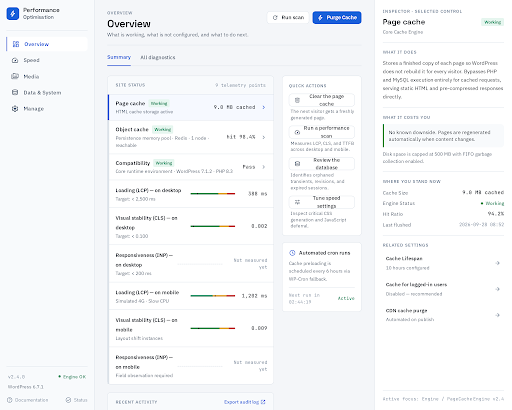
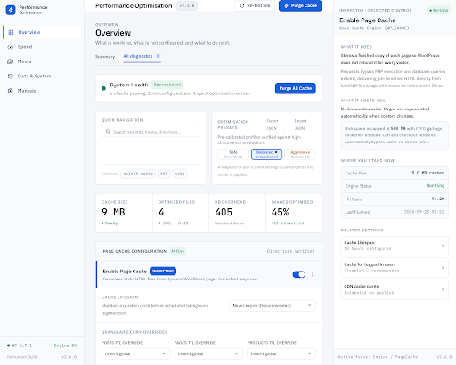
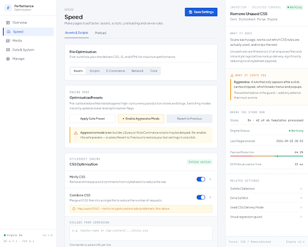
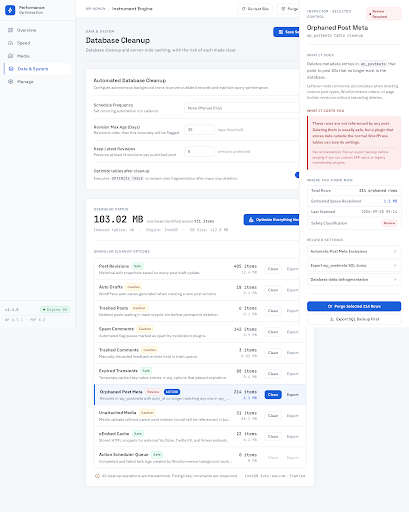
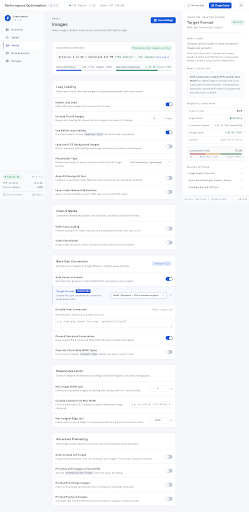
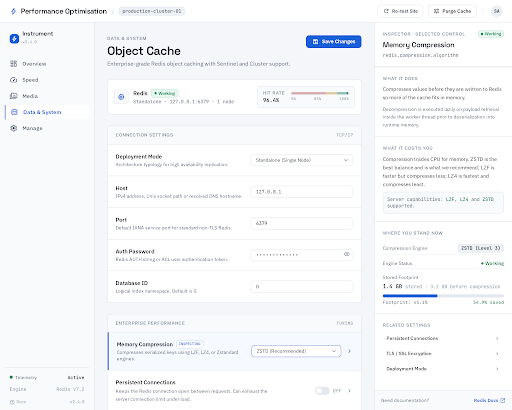
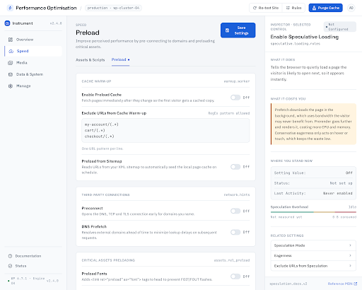
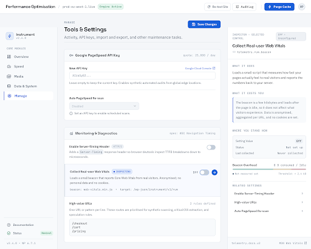

Redesign proposal
One direction for the Performance Optimisation admin, replacing the three rejected variants. A control room for a single site's performance: cool, quiet, dense with meaning rather than pixels, and built so every setting can explain itself.
1. The threshold rail. A performance metric is not pass/fail — it is a position on a scale with real published boundaries. Every metric is drawn as a short rail with good / needs-work / poor zones and the current value plotted as a solid marker. A green pill gives a verdict; a rail shows where you stand and how much room there is.
2. The inspector. A persistent right-hand panel that explains whatever control or metric is focused, always answering the same three questions in the same order: What it does · What it costs you · Where you stand now. On a 246-field settings surface the real question is never "what is this called" — it is "is this safe for my site, and what changes if I turn it on".
Cool, low-chroma instrument palette. Hairlines and spacing create depth; shadows are reserved for genuinely floating layers. Blue is used for actions and focus only — never decoration.
#F4F6F9 · surface #FFFFFF · hairline #DDE3EA · ink #0C1420 · muted #4A5A6E#1B5FD9 · good #0B8A5C · needs work #B26A00 · poor #C02626 · idle is a first-class state, not an errorEvery screen shares the same shell: a light 236px nav, a fluid left-aligned work area, and the 344px inspector. Only the middle changes.








These are generated design references, not working code. The screenshots above are 512px thumbnails rendered by Stitch; the linked HTML files are Stitch's own export and are useful for reading exact spacing and colour, but they are single static pages with no behaviour — no live inspector, no conditional fields, no keyboard navigation. A production implementation still needs to be built, and the accessibility, overflow and responsive behaviour of this direction has not been verified in a real browser.